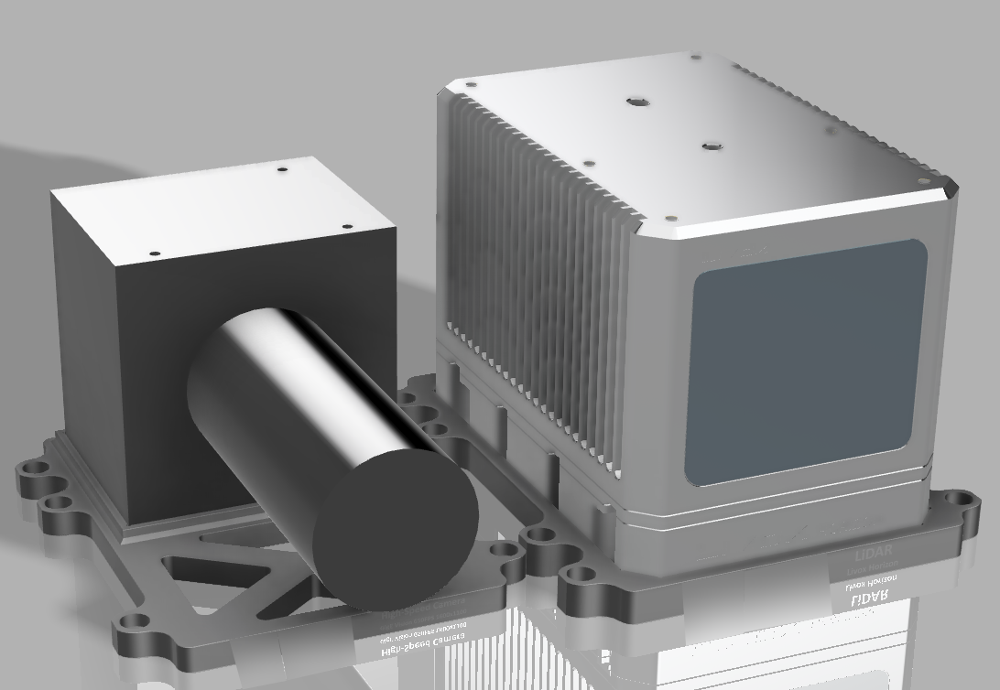
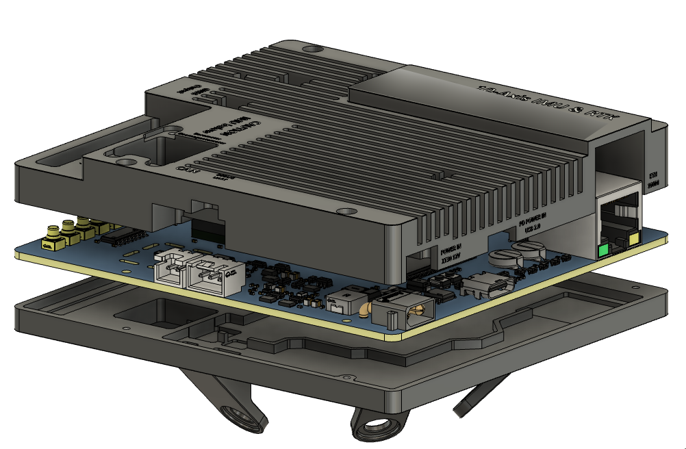
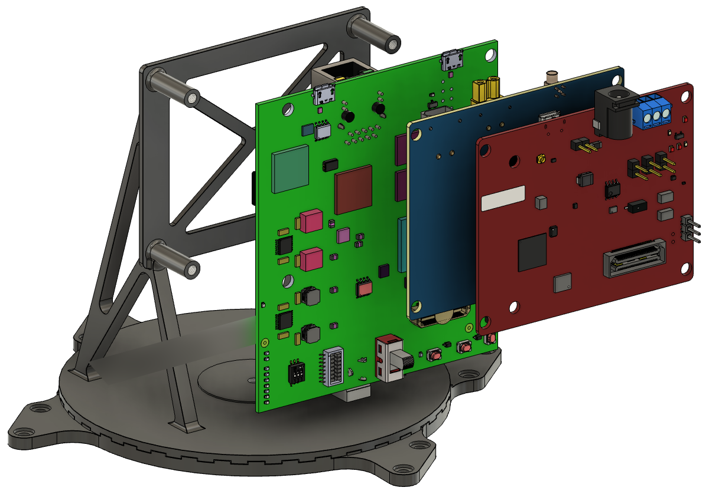
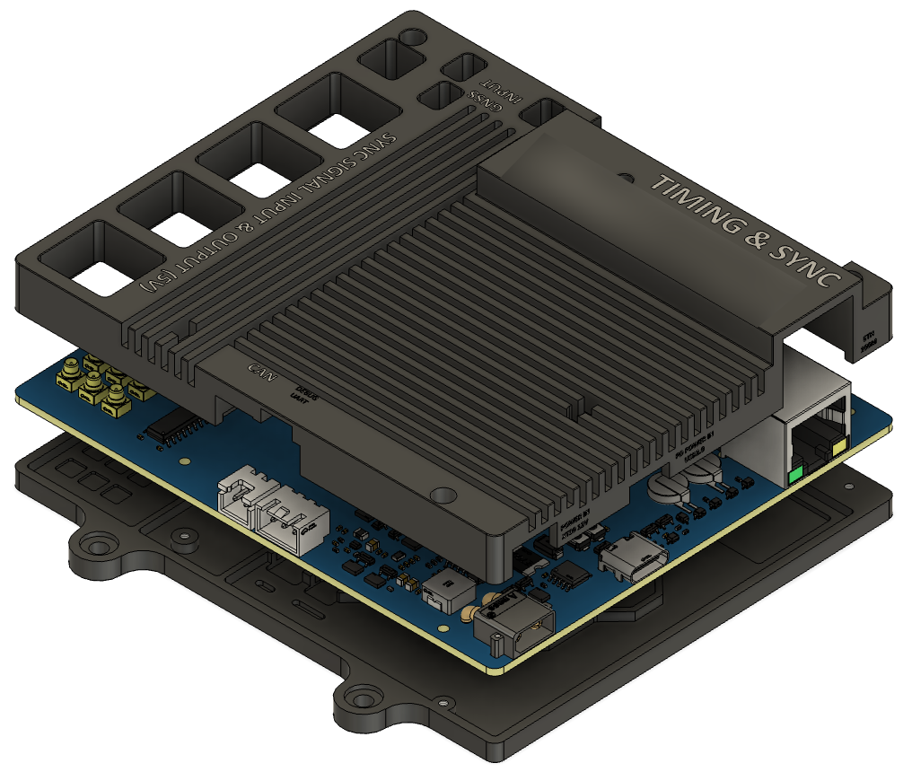

SYNOVA: A Unified Multi-Node Multi-Modal Platform for Collaborative Sensing Systems
Abstract
Mobile autonomous systems, including autonomous vehicles and mobile robots, increasingly rely on multi-modal sensing and multi-agent collaboration to support reliable perception and planning. However, building such systems in the real world remains challenging because distributed heterogeneous sensors must share consistent time and space references, and the sensing stack must be reusable across different node configurations and experimental tasks. In this paper, we present SYNOVA, a unified open-source full-stack platform for multi-node multi-modal collaborative sensing. First, SYNOVA provides deterministic synchronization through a hardware-based sync unit that establishes a shared time reference across nodes and sensors, bypassing the timing uncertainty introduced by host operating systems, CPU load, and network conditions. Second, SYNOVA provides a cross-node localization toolchain that combines online pose estimation from hardware-timestamped RTK-GNSS and IMU measurements with an offline LiDAR-based method for acquiring high-precision pose reference. Third, SYNOVA provides a multi-modal integration stack that supports cameras, LiDARs, mmWave radars, RTK-GNSS, and IMUs through synchronized hardware interfaces, sensor drivers, and containerized runtime management. We implement SYNOVA on real hardware and evaluate its timing, localization, and sensing performance. The results show that SYNOVA maintains sub-microsecond inter-node synchronization under varying network load and provides centimeter-level online pose accuracy against the offline LiDAR-based reference, demonstrating its ability to support reproducible and extensible real-world collaborative sensing research.
Sensors
Camera & LiDAR

Customized 10-axis IMU

mmWave Radar

Synchronization Unit
